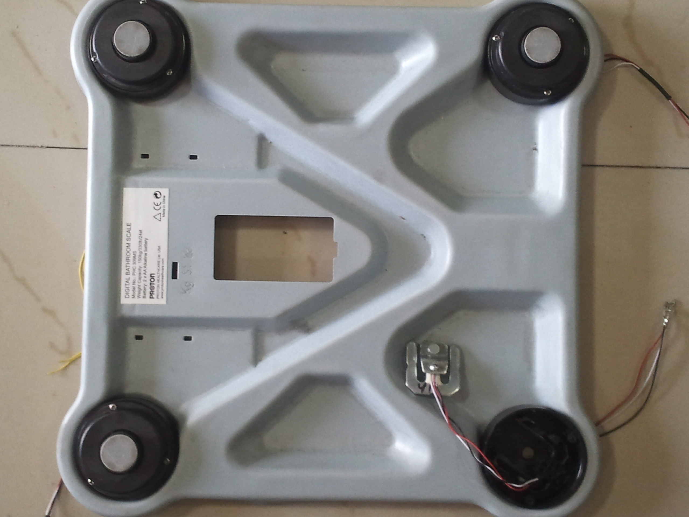
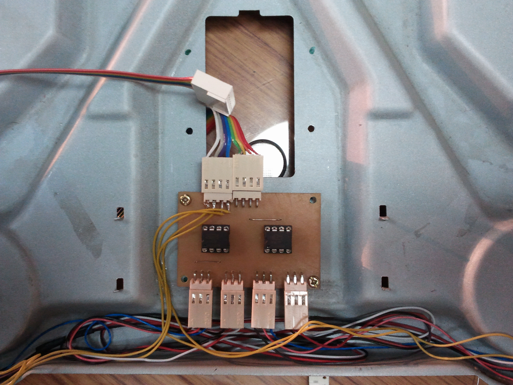
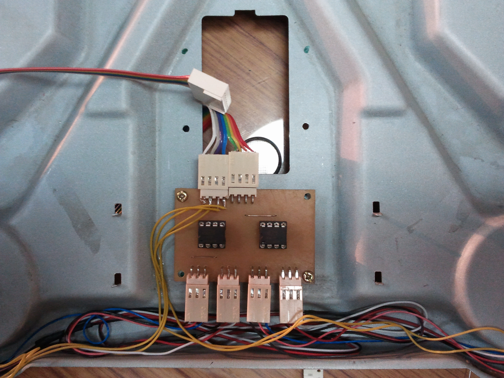

Multilingual Cloud based Health Monitoring Manager
TI Analog Design Contest 2011
The Idea
Create an interface for easier integration of physical readings from Daily Life devices onto the cloud. We initially thought of using Pachube using the Pachube API, later thought of moving to Google Health (which unfortunately was shutdown midway during the project).As a proof of concept we have hacked a weighing scale and have transferred physical value on a real-time basis onto a web application. The project was implemented for English and French. 
{kind=link}
 

{kind=link}
Implementation
The contest was in 2 phases,Phase 1 involved coming up with an idea of a project and showcasing the impact of the project. As part of the competition, we were also supposed to perform an experiment of the TI Analog.
Phase 2 : Involving the implementation of the idea proposed in Phase 1 after the necessary solving of a mandatory analog problem.
A standard weighing is hacked and replaced with custom circuitry using two INA122P Instrumentation Amplifier. A physical reading is extracted onto the ARM micro-controller (Stellaris Cortex-M3 based LM3s811) using the inbuilt ADC. After subsequent calliberation and normalization the readings are then sent via a bluetooth module to an Android Phone. A Custom app running on the phone then transfers this reading to the Google App Engine application online using the Google Cloud to Device Messaging Framework.
Work of two teams was done combined by the three contributors tagged on this project. No submission from our senior batch got us a penalty. Rohit's Project won the best video award.
Things learnt along the way
1. Working: Never underestimate the thinking which goes behind something as simple as a digital weighing scale. Working of Compressive and Tensile Straing Gauges.2. Key Answers to questions like:
(i) Does standing ahead or below make a difference ?
(ii) How is it that you stand on it and it only then switches itself on ?
(iii) Caliberating ADC readings to weight (in Kg)
(iv) Since support for Google Health was discontinued midway during the project. We decided to shift onto the Google Appengine. Learning and deploying with Cloud to Device Messaging Framework was challenging and fun. Software skills put to work.
Nivedita Arora |Shanjit Singh Jajmann | Rohit Dureja | Mar 1st, 2012 | Video Team 1 | Video Team 2 | Source Code on Github